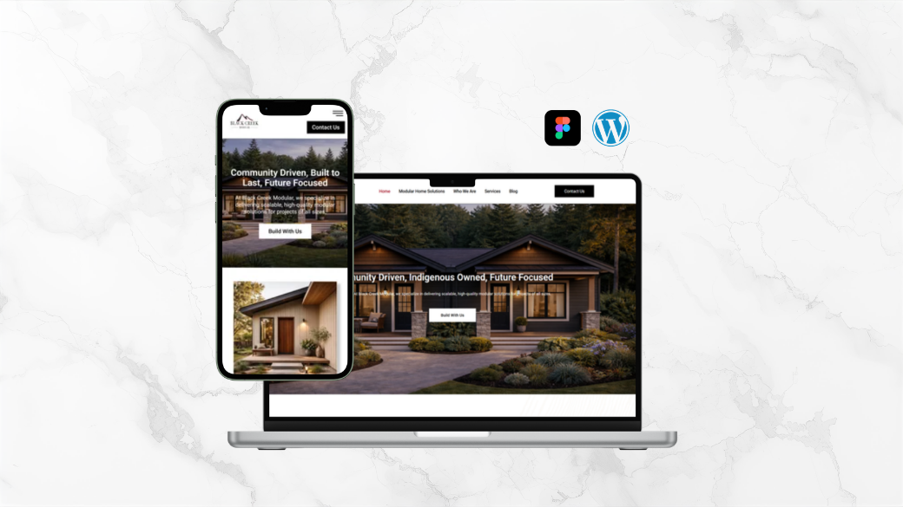
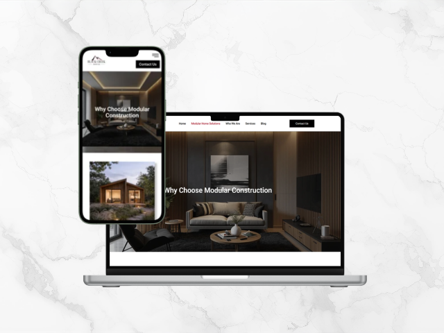
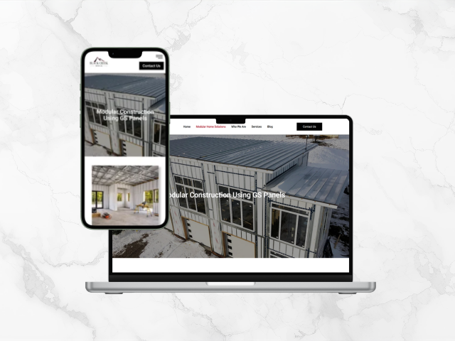
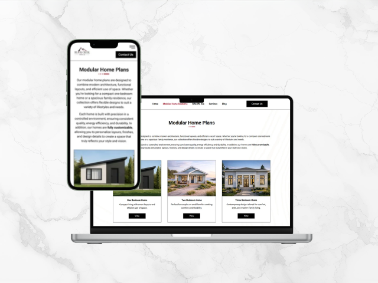
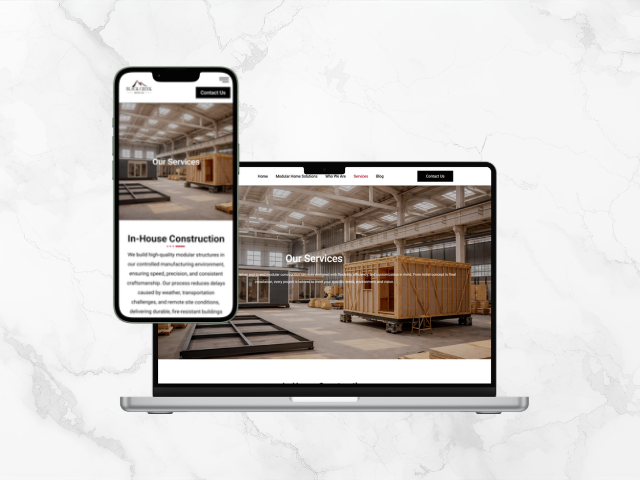
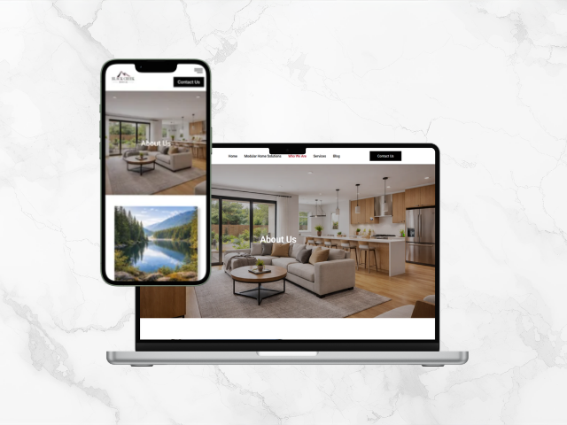
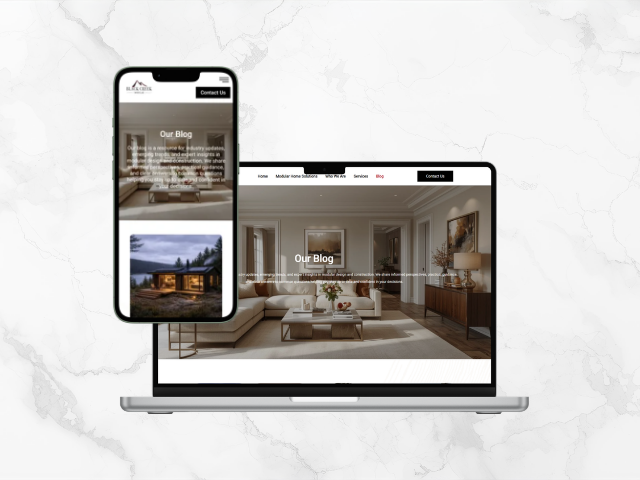
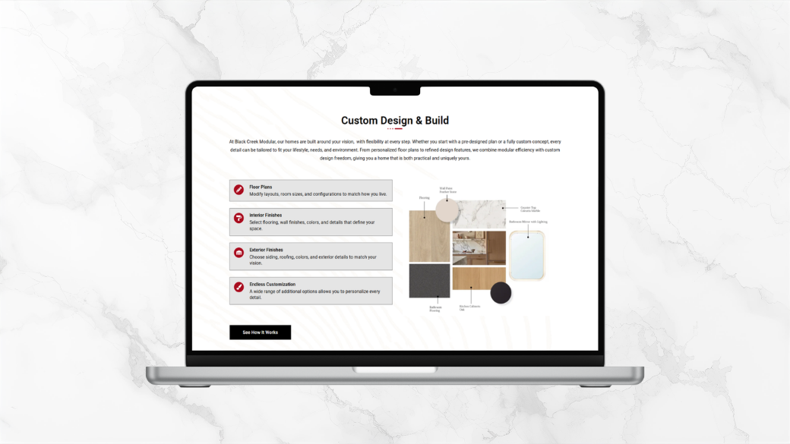
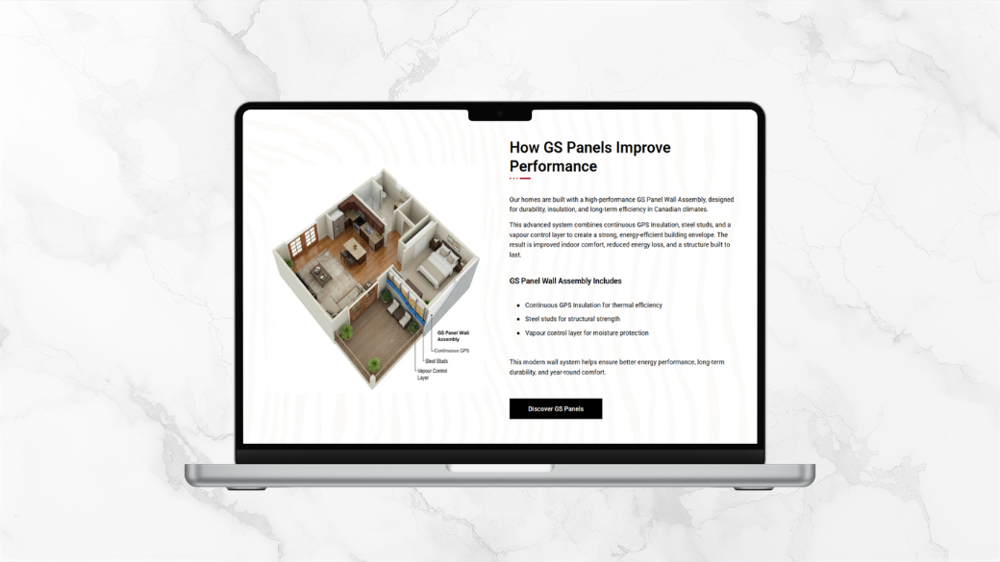
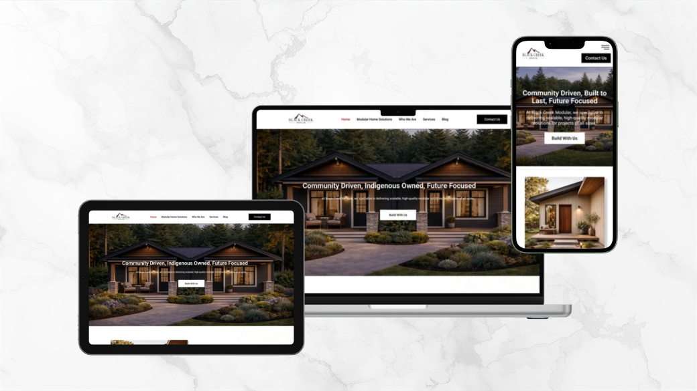

A complete WordPress website built from scratch for a Vancouver Island modular construction company — covering everything from branding direction and information architecture through to a fully live, SEO-optimised responsive site.

🏔️assets/bcm_website/cover.pngBlack Creek Modular is a locally owned modular construction company based on Vancouver Island, BC. They specialise in delivering scalable, high-quality modular homes and buildings — from single residences to large-scale community developments including schools, healthcare facilities, and housing projects. Their work spans remote and hard-to-reach locations across British Columbia, with a strong commitment to sustainable, code-compliant construction.
The company came to me without a website and needing a proper digital presence to support business growth, quote inquiries, and awareness of their modular approach. The brief was to design and build a complete, professional WordPress website that communicated their expertise, showcased their product range, and made it easy for prospective clients to get in touch.
Before writing a line of code, I mapped out the full site structure. The goal was to organise content logically from the perspective of someone discovering modular construction for the first time — moving from "what is this?" through to "I want a quote."
Black Creek Modular needed to look like a serious construction company — not a generic small business template. The visual direction drew from their existing logo: a bold, dark aesthetic with a stylised mountain silhouette in black and red. I extended this into a full site identity using a dark hero palette, strong typography, and clean whitespace throughout the content pages.
Colour-wise, the site uses near-black backgrounds for hero sections and CTAs (communicating strength and quality), with white and light-gray content areas to keep long-form information highly readable. Red is used as the accent for interactive elements, echoing the logo.
Each page was designed and built individually in Elementor with consistent components and reusable sections. Below are the core pages that form the site's content backbone.

📋Why Choose Modular
🧱Advanced Panel Technology
📐Home Plans
🏢Services
👥Who We Are
✉️BlogsThe homepage was designed as a complete journey — from first impression through to quote request. Each section was crafted to answer the next question a visitor would naturally have.

🖼️Benefits section
🖼️GS Panel sectionOne of the most important conversion elements on the site is the detailed quote request form. Rather than a generic contact form, this was built to capture the specific information Black Creek Modular needs to qualify and respond to enquiries efficiently — home size preference, full contact details, location, and any additional notes from the prospective client.
A large portion of construction-related website traffic comes from mobile — clients browsing on site, contractors checking details, or homeowners researching from their phone. Every page was tested and optimised across desktop, tablet, and mobile breakpoints in Elementor, ensuring the layout, typography, images, and navigation work flawlessly at any size.

WordPress with Elementor was the right choice for this client — it gives Black Creek Modular the ability to update content, add blog posts, and manage their floor plan listings independently, without needing a developer for every change.